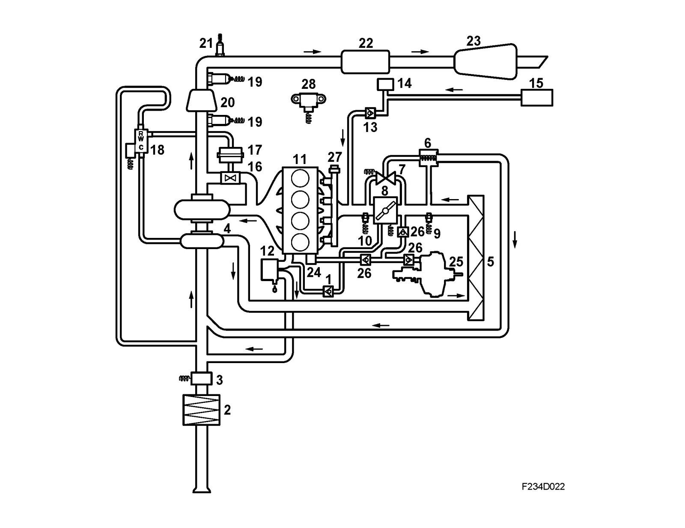

Function Diagram
Function diagram
1. Check valve, crankcase ventilation
2. Air filter
3. Mass air flow sensor (205)
4. Turbo
5. Charge air cooler
6. By-pass valve
7. Solenoid valve, turbo by-pass (605)
8. Throttle body actuator unit (604)
9. Intake air temperature sensor (407)
10. Manifold absolute pressure sensor (431)
11. Engine
12. Crankcase ventilation, oil trap
13. Check valves
14. EVAP canister purge valve (321)
15. Evaporative emission canister
16. Wastegate valve
17. Charge air regulator
18. Boost pressure control valve (179a)
19. Oxygen sensor (592, 593)
20. Catalytic converter
21. Exhaust temperature sensor (602)
22. Front silencer
23. Rear silencer
24. Vacuum pump
25. Brake servo
26. Check valve
27. Fuel pressure regulator
28. Atmospheric pressure sensor (539)